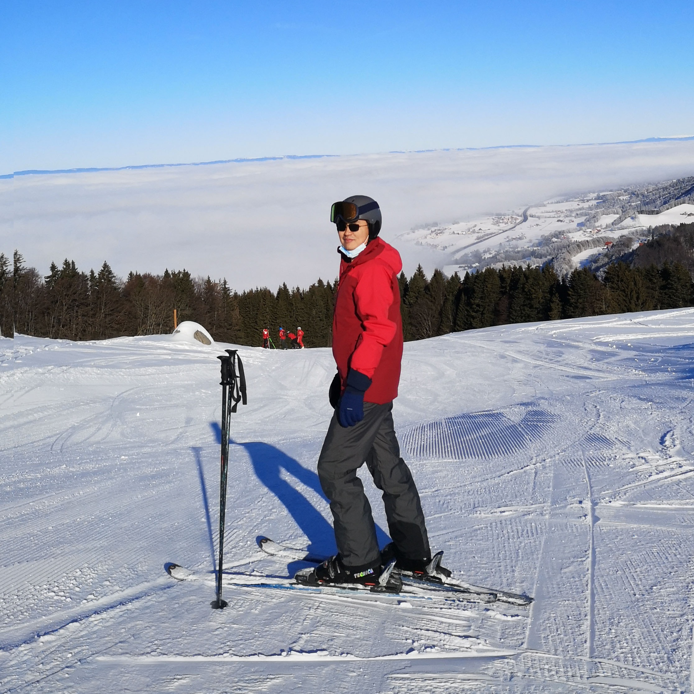

Research Software Engineer · MSc CS (Georgia Tech) · PhD (EPFL)
I build prototypes end to end: web front ends and back ends, on-device ML, containerized cloud deployments and Unity/C# 3D applications. I work daily with agentic AI coding tools, and my research background brings experimental design and careful data analysis to the software I make.
Based in Zurich. Outside of code: hiking in the Alps, skiing and photography.
On-device ML Android apps that notify you when the sound level crosses a threshold or a TinyML model detects an alert sound, plus a companion app for real-time YAMNet audio classification.
3D horror-puzzle game: navigate trapped rooms, solve puzzles and escape a ghost. Built an AI chase agent, player-health system and UI. Team project.
Full-stack skin-cancer diagnostic web app: upload a lesion image, get a prediction from a CNN trained on ISIC. Full CRUD on patient and condition records via a HAPI FHIR R4 server; containerized and deployed on AWS EC2. Team of three.
Smart task scheduler built in one day by a team of four at the IBM × GDG Zurich “Bobathon” hackathon (Apr 2026). Mood- and goal-based task generation, priority scheduling without overlaps, ICS calendar import and in-browser persistence.
Chrome extension that adds multi-select bulk deletion to the Gemini sidebar, kept in sync with the dynamically re-rendered page via a MutationObserver.
Miniscope, fiber photometry and patch clamp, focusing on the ACC–PAG circuitry; built custom fiber photometry setups and analyzed 20 TB of imaging data.
Individual differences in reward-based learning, focusing on dopamine dynamics. Open-sourced the Python/MATLAB data pipelines.
Temporal requirements for fear-conditioning association.
Synchronized recording of central neural activity and peripheral functions.